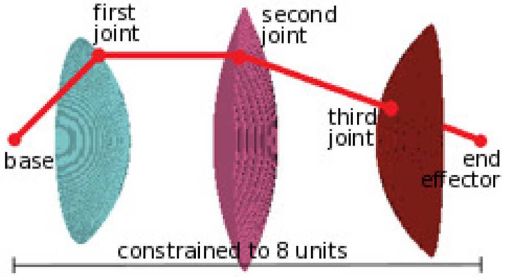
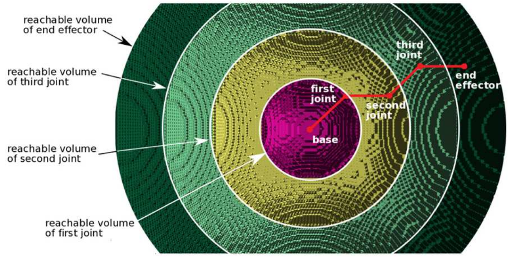
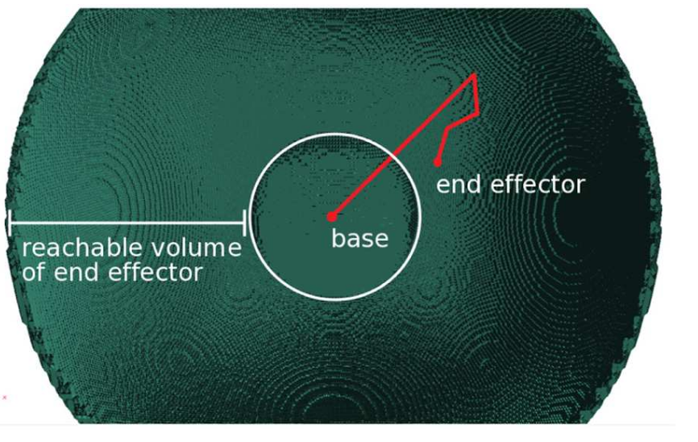
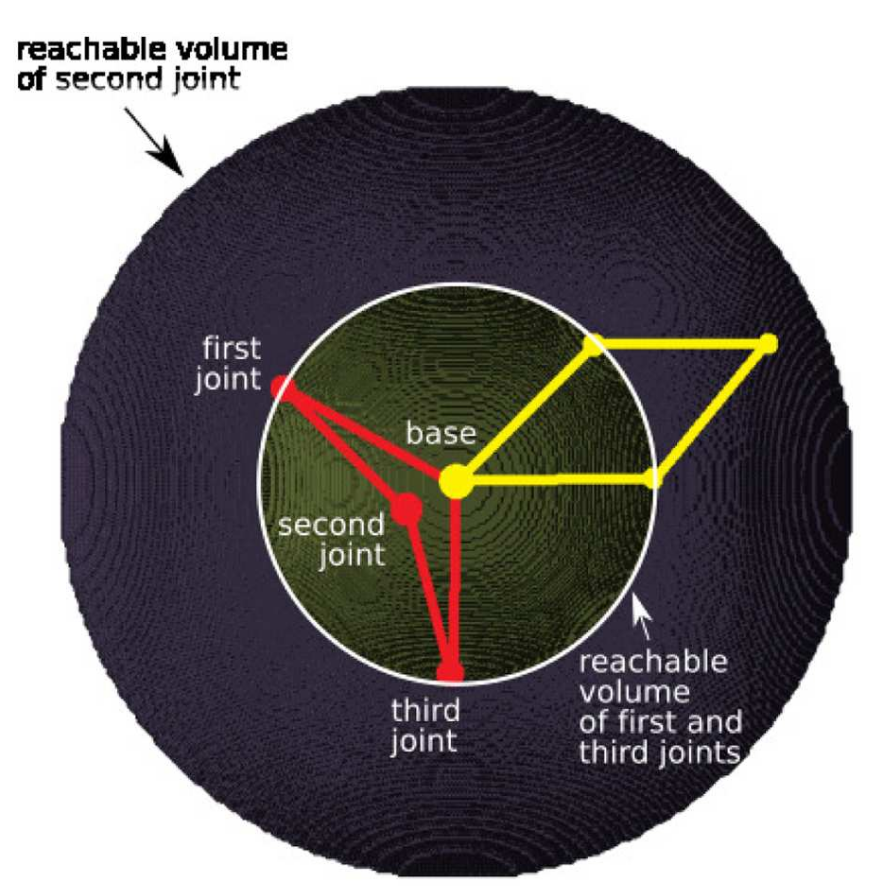
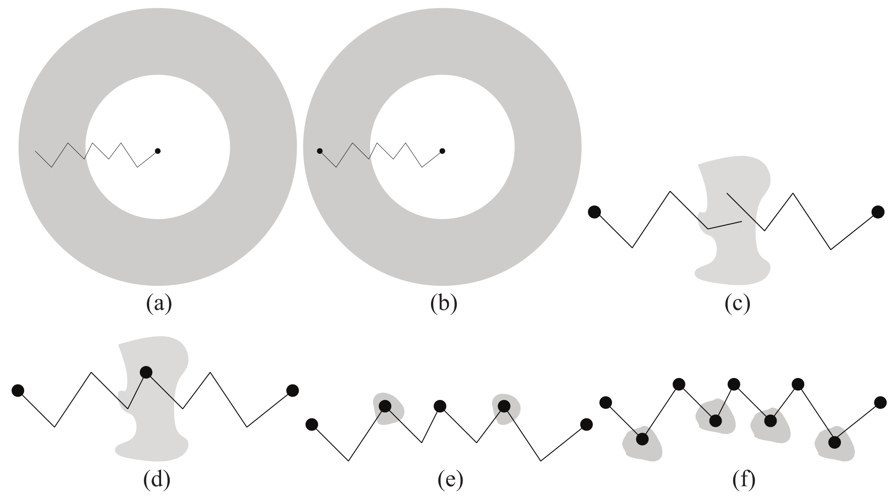
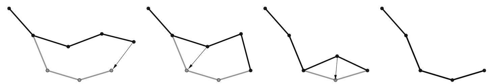

Reachable Volumes
Sampling-Based Motion Planning for High-Degree-of-Freedom Robots and Constrained Systems
Reachable volumes represent the regions of space that
individual joints and end effectors can reach while
satisfying the constraints of a robotic system.
Motion planning for robots with many degrees of freedom
and spatial constraints is computationally challenging.
Traditional sampling-based planning methods generate
configurations throughout the robot's configuration
space, but the probability of generating configurations
that satisfy complex spatial constraints can become
extremely small.
My research introduced Reachable Volumes,
a geometric representation of the regions that individual
joints and end effectors can reach while satisfying
constraints imposed by the robot and its environment.
By representing reachability geometrically, this
framework transforms constrained motion planning into
a sampling problem in a new planning space, called
RV-space, where generated samples
naturally satisfy the constraints.
This approach enables sampling-based motion planning
algorithms to efficiently solve problems involving
high-degree-of-freedom robots, articulated linkages,
closed-chain systems, and robots with complex spatial
constraints.
High-degree-of-freedom robots and constrained systems
present significant challenges for motion planning.
Constraints may require a robot to maintain contact
with a surface, keep joints within specified regions,
preserve closed-chain relationships, or satisfy
end-effector requirements.
These constraints often define a lower-dimensional
manifold within the robot's configuration space.
Randomly sampling configurations in the full
configuration space has little probability of producing
configurations that satisfy these constraints.
As the number of degrees of freedom increases,
this problem becomes increasingly difficult.
The reachable volume of a joint or end effector is
the region of space that it can reach while satisfying
the constraints imposed on the robot.
The reachable volumes of a robot collectively
describe the feasible spatial relationships between
its joints.
Reachable Volumes generalize traditional reachability
representations to accommodate complex robotic systems,
including linkages with planar, prismatic, and spherical
joints, closed chains, and tree-like robots.
   
Visualization of reachable volumes illustrating
the spatial regions accessible to different
components of a robotic system.
Reachable Volumes define a new planning space,
RV-space, in which the relative positions of
the robot's joints are represented through their
reachable volumes.
By sampling within these volumes, configurations
can be generated that automatically satisfy
spatial constraints.
This eliminates the need to repeatedly generate
random configurations in the full configuration
space and reject those that violate the constraints.
I developed algorithms for computing the
reachable volumes of robotic joints and
end effectors.
These algorithms use geometric operations
to propagate reachability through articulated
structures while incorporating spatial
constraints.
The framework supports complex robot
structures, including open chains,
closed chains, and tree-like systems.
Reachable Volume sampling generates
configurations by iteratively sampling
the joints of a robot within their
respective reachable volumes.
Because each joint is sampled within
its feasible region, the resulting
configurations naturally satisfy
the spatial constraints.

I developed a local planner that connects
configurations through reachable volume
space.
The planner moves the joints through
reachable volume stepping, producing
paths that satisfy the spatial constraints
throughout the motion.
This is particularly important for
constrained systems such as closed-chain
robots, where conventional straight-line
interpolation in configuration space
may violate the constraints.

I also developed a distance metric based on
the distances traversed by the joints in
reachable volume space.
This metric provides a more meaningful
measure of distance between configurations
for robots with complex spatial constraints
than traditional Euclidean distance in
configuration space.
The reachable volume framework provides
fundamental operations that can be integrated
into sampling-based motion planning algorithms.
These operations include reachable volume
sampling, local planning, and distance metrics.
By incorporating these operations into
probabilistic roadmaps (PRMs), the resulting
planners can efficiently generate roadmaps
containing feasible configurations and
constraint-satisfying paths.
An important extension of this research was
the development of Reachable Volume RRT
(RVRRT), which extends the reachable
volume framework to tree-based sampling
algorithms such as Rapidly-Exploring Random
Trees.
RRTs traditionally expand trees by sampling
random configurations and moving toward
nearby samples.
For constrained systems, this process
frequently generates invalid configurations.
RVRRT addresses this challenge by using
reachable volume stepping to expand the
tree while maintaining the robot's
spatial constraints.
The Reachable Volume framework was evaluated
on a broad range of motion planning problems
involving open-chain robots, closed-chain
systems, and tree-like robots.
Experiments included robots with hundreds
and more than one thousand degrees of freedom.
Experiments demonstrated that reachable
volume sampling is effective for systems
with large numbers of degrees of freedom.
The framework was evaluated on chains,
closed-chain robots, and tree-like systems
across a variety of environments.
Reachable Volume planners were evaluated
on problems involving closed chains and
spatial constraints.
The resulting samples and paths naturally
satisfy these constraints, allowing the
framework to address problems that are
difficult for conventional sampling-based
planners.
Experimental results show that reachable
volume methods generate more valid samples
and produce more efficient roadmaps than
existing sampling-based approaches for
challenging high-dimensional problems.
Reachable Volume RRT was also shown to
solve several difficult planning problems
that conventional RRT and dynamic-domain
RRT methods could not solve.
Reachable Volumes provide a general
framework for motion planning across
multiple robotic domains.
Reachability representations can be used
to reason about the regions that robot
joints and end effectors can reach during
manipulation tasks.
This can support grasp planning,
constrained manipulation, and planning
for complex articulated systems.
Reachable Volumes can be used to determine
whether a robot can reach required
locations while maintaining constraints
imposed by tools, objects, and the
surrounding environment.
High-degree-of-freedom articulated systems
are also found in computational biology.
Reachable Volume representations provide
a potential framework for motion planning
and sampling in problems involving
molecular structures and protein folding.
Reachability representations can support
motion planning for folding and
reconfigurable robotic systems,
including robots with complex articulated
structures.
An important direction for future research
is the development of probabilistic
Reachable Volumes.
Rather than representing reachable
regions as deterministic geometric
volumes, probabilistic Reachable Volumes
would represent joint positions using
probability distributions while
maintaining the system's constraints.
This would enable motion planning
under uncertainty and provide a
framework for reasoning about
uncertainty in robot motion,
perception, and localization.
Probabilistic Reachable Volumes could
support belief-space planning and
uncertainty-aware motion planning
for robotic systems operating in
uncertain environments.
One potential application is medical
robotics, including needle steering
and other procedures where motion
must be planned under uncertainty
while satisfying spatial constraints.
Reachable Volume visualizations can
provide useful feedback for robot
operators and support user-guided
motion planning.
Further development of these
representations could provide
intuitive interfaces for controlling
complex high-degree-of-freedom
robotic systems.
Reachable Volumes form part of my
broader research program in
motion planning for complex
robotic systems.
Overview
The Problem

Reachable Volumes
RV-space
Methodology
1. Reachable Volume Computation
2. Reachable Volume Sampling
3. Reachable Volume Local Planning
4. Reachable Volume Distance Metric
Reachable Volume Motion Planning

Reachable Volume RRT

Key Contributions
Experimental Results
High-Degree-of-Freedom Systems

Constrained Motion Planning

Comparison with Existing Methods
Applications
Robotic Manipulation
Industrial Automation
Computational Biology
Reconfigurable and Folding Robots
Future Research Directions
Probabilistic Reachable Volumes
Planning Under Uncertainty
Applications to Medical Robotics
Reachability for Robot Control
Related Research
Publications
DOI: 10.1177/0278364918779555
DOI: 10.1109/ICRA.2015.7139607
DOI: 10.1109/IROS.2014.6943082
DOI: 10.1109/ICRA.2014.6907820
DOI: 10.1109/IROS.2017.8206257